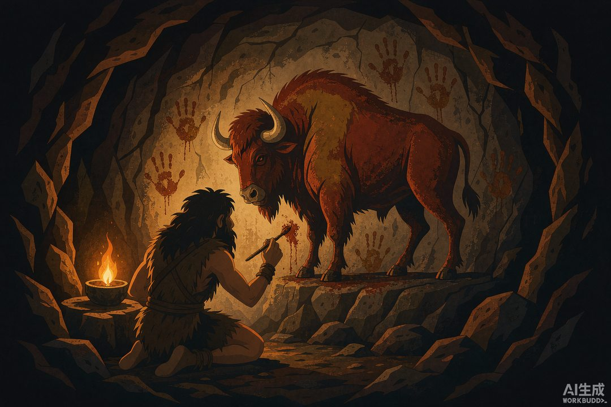
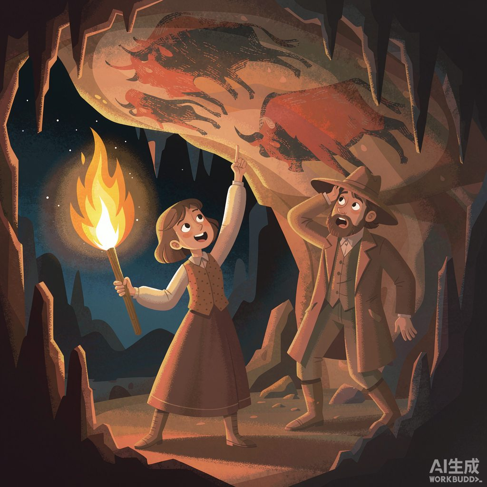
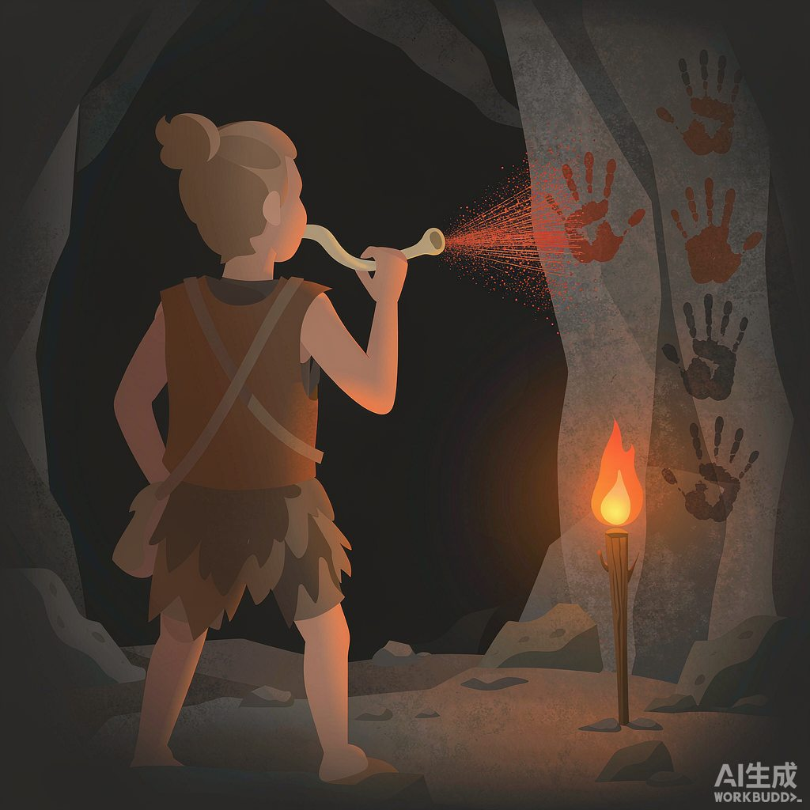

|
信息传播那些事儿 · 卷一 信息的黎明 · 第02篇 |
|
山顶洞人的壁画：最早的「朋友圈」 |

▲ 三万年前的「发布现场」（AI 生成示意图）
|
你今天发的朋友圈，热度大概能活三天。而三万年前发在石壁上的"朋友圈"，到今天还在原地挂着——没有账号，不能删除，全人类都是它的访客。 |
上一篇说到，八卦这套系统有个致命 bug：它传得快，但留不住。嘴一张一合，话就随风散了，再重要的消息，第二天也得重讲一遍。
于是人类干了件大事：把信息从"嘴里"搬到"墙上"。
这期讲讲人类历史上第一次"发布内容"。为了讲好它，先讲一个憋屈了十四年的故事。
|
一、1879 年，一句「爸爸快看」 |
西班牙北部，一个叫阿尔塔米拉的洞子。考古爱好者马塞利诺·桑图奥拉带着八岁的女儿玛丽亚进洞挖 bones——找古兽骨头。
大人忙大人的，小孩钻小孩的。玛丽亚个子矮，钻进了一段大人够不着的低矮洞道。忽然，洞里炸出一声喊：
"爸爸！快看，牛！会动的牛！"
她爹举着灯爬过去，抬头一看，头皮发麻——洞顶上画满了野牛，红的黑的，姿态各异，膘肥体壮，隔着万年时光还在打滚。
桑图奥拉激动坏了：这是史前人类画的画啊！第二年兴冲冲发表论文。
然后，他被学界按在地上摩擦了整整二十年。
当时的专家们主流意见是：原始人茹毛饮血，怎么可能画得这么好？结论只有一个——你雇人造假骗经费。1888 年，桑图奥拉在冤屈中去世，到死没等到一句道歉。
1902 年，更多洞穴壁画相继出土，学界终于回头认账：阿尔塔米拉是真的。平反那天，距离那声"爸爸快看"，已经过去二十三年。

▲ 1879 年，玛丽亚举灯指牛的瞬间（AI 生成示意图）
这个故事先记着，结尾有用。现在我们钻回更早的年代，看看这批"首发博主"到底在干什么。
|
二、朋友圈，字面意义上的「圈」 |
微信把那个功能起名叫"朋友圈"，其实是个比喻。但人类最早的"朋友圈"，是字面意义的——真的是一圈墙，画上去，给来看的人刷。
而且你会发现，史前博主发的内容，跟今天的朋友圈惊人地像。
第一，内容不画自己。考古学家翻遍欧洲几大洞穴，人的形象少得可怜，偶尔出现，也就是个火柴人级别的小卡通。这跟今天一样：你发火锅、发猫、发风景，唯独不发自拍真的自己——发的都是"我想让你看到的生活"。
第二，疯狂晒"硬通货"。洞壁上的绝对主角是动物，其中马占了四分之一——在没有庄稼的年代，猎物就是财富，画满一墙的牛马，约等于今天晒车晒房。
第三，互动痕迹很重。洞穴深处到处是手印：把手按在墙上，含一口红颜料喷上去，抬手，一个完美的手形印章。一个接一个，排成串。这是人类最早的"到此一游"，也是最古老的点赞——手印一按，表示"我来过，我看过，我同意"。

▲ 按手印：史上第一个「赞」按钮（AI 生成示意图）
但有一点，史前博主比今天的博主狠得多：发布成本。
你以为画画就是抬手就来？想多了。很多壁画藏在洞穴最深处——那段路今天的人爬都得爬半天，中间还要钻一条仅容一人通过的窄缝，全程没有光，举着烧动物脂肪的小石灯走。颜料也不将就：红的是烧过的赭石，黑的是烧剩的木炭，还要掺动物脂肪调出粘度，配比错了上不了墙。
也就是说，每一条"朋友圈"，都是摸黑爬洞、自带灯具、手工调色之后才发出来的。就这个创作成本，今天任何一个日更博主听了都得沉默。
|
数字锚点 · 人类"发文"四万年，"写字"才五千年 | |||||||||||||||
这意味着：图像是比文字古老得多的信息载体。而且它跨越语言——今天不识字的你站在这头野猪面前，照样看得懂。文字，反而是后来的"补丁"。 | |||||||||||||||
|
三、最早的「动画」和「表情包」 |
史前博主的手艺，比你想的还要卷。
肖维岩洞里，考古学家数出了 53 幅"动态图"：同一头狮子画了叠影，八条腿表示正在冲刺；野牛头部的多重重叠轮廓，看起来是在甩头。法国学者做过一个实验——举着火把在壁画前走动，火光晃动，墙上的动物仿佛真的在跑。
联合国教科文组织给它的评价是：世界上最早的影像艺术。翻译一下：三万年前，人类就发明了"动图"。你今天刷到的每一条 GIF，祖宗在这儿。
洞壁上还有大量点、线、格子的组合符号，考古学家到现在也没完全破译。它们的作用类似今天的表情包——不表意，但表态度。另外史前画家已经会借洞壁的天然起伏构图：凸起当牛背，凹坑当牛腹，妥妥的"3D 立体构图"祖师爷。
所以别小看这批"原始人"。他们在技术上做的事，跟今天的创作者一模一样：用当时最好用的工具，做最抓眼球的内容。
|
四、关键问题：谁生产？ |
现在回到这个系列的"四问"。这一篇，主要答第一问：谁在生产信息？
上一篇的八卦阶段，答案是"人人"——会说话就会八卦，人人都是生产者。
但壁画一出现，事情变了。不是所有人都进得去洞的。
会调颜料的、敢摸黑爬洞的、举着油灯能在绝壁上把野牛画活的——这种人，一个部落里能有几个？所以很多学者相信，洞穴深处画画的人不是普通成员，可能就是巫师或者特定家族的人，画画这件事本身带着仪式门槛。
你看，人类历史上第一次"发布权限"出现了。会说话不等于能发布——从这一刻起，"生产信息的人"和"消费信息的人"，开始分家了。
这个分家的故事，往后要重演无数次：会写字的僧侣、识文断句的士大夫、拿印刷机的报人、握摄像机的电视台、有粉丝量的博主……每一次技术换皮，都换一批人拿到发布权，也都有人被挡在门外。
三万年前的那个史前画家，是这整条队伍的第一棒。
|
五、回到那个憋屈的故事 |
还记得开头那个等了二十三年才被承认的桑图奥拉吗？
他的冤案暴露了信息传播的另一条铁律：新东西刚出现时，最先遇到的往往不是掌声，是不信。史前人画的画，专家不信是史前的；一百多年前的人也一样——直到更多证据出现，大家才不情愿地承认：我们对远古博主的想象力，还是太穷了。
更有意思的是一个反转：2018 年之后的研究发现，某些洞穴里最老的画，可能根本不是我们智人画的，而是尼安德特人画的。也就是说，"发朋友圈"这件事的门槛，可能比我们以为的还要低——连另一个人类物种，都忍不住想在墙上留点什么。
想在墙上留下点什么，这大概是刻在骨头里的冲动。
但壁画有个天生的缺陷：它搬不走，也复制不了。牛画在这面墙上，就只属于这面墙。明天部落要迁去隔壁山谷，你总不能把洞背走。
信息要流通，光"存得住"不够，还得"带得走"。人类想出的第一个办法朴素得可爱：拿根绳子，打个结。
下一篇，我们聊聊结绳记事——人类最早的"Excel 表"，一个结，记一头羊。
|
下篇预告 · 第03篇《结绳记事：上古的 Excel 表》——一根绳子打个结，就能记账、记事、记契约。没有文字的年代，人类靠什么把日子过得井井有条？ |
|
本篇涉及的考古年代与事件转引自肖维、拉斯科、阿尔塔米拉等洞穴的公开考古研究与世界遗产资料；配图为 AI 生成示意图。 |